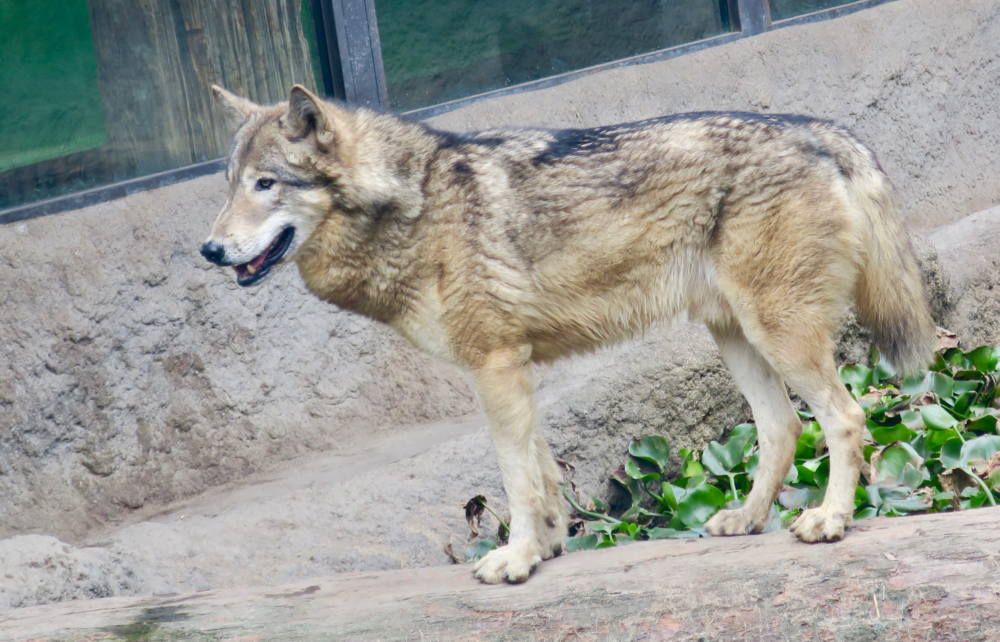

Wolves of Canada
Arctic wolf

Taxonomy
In 1935, the British zoologist Reginald Pocock attributed the subspecies name Canis lupus arctos
(Arctic wolf) to a specimen from Melville Island in the Queen Elizabeth Islands, Canada. He wrote that
similar wolves could be found on Ellesmere Island. He also attributed the name Canis lupus orion to a
Greenland wolf specimen from Cape York, northwest Greenland. Both wolves are recognized as separate
subspecies of Canis lupus in the taxonomic authority Mammal Species of the World (2005).
Behaviour
The Arctic wolf is relatively unafraid of people, and can be coaxed to approach people in some areas.
The wolves on Ellesmere Island do not fear humans, which is thought to be due to them seeing humans so little,
and they will approach humans cautiously and curiously.
Otto Sverdrup wrote that during the Fram expedition, a pair of wolves shadowed one of his teammates, who kept
them at a distance by waving his ski pole. In 1977, a pair of scientists were approached by six wolves on
Ellesmere Island, with one animal leaping at one of the scientists and grazing a cheek. A number of incidents
involving aggressive wolves have occurred in Alert, Nunavut, where the wolves have lived in close proximity to
the local weather station for decades and became habituated to humans. One of these wolves attacked 3 people,
was shot, and tested positive for rabies.
Very little is known about the movement of the Arctic wolves, mainly due to climate. The only time
at which the wolf migrates is during the wintertime when there is complete darkness for 24 hours. This
makes Arctic wolf movement hard to research. About 2,250 km (1,400 mi) south of the High Arctic, a wolf
movement study took place in the wintertime in complete darkness, when the temperature was as low as −53
°C (−63 °F). The researchers found that wolves prey mainly on the muskoxen. There is no available information
of the wolves' movements where the muskoxen were.
Diet
In the wild, Arctic wolves primarily prey on muskoxen and Arctic hares. They have also been found
to prey on lemmings, caribou, Arctic foxes, birds, and beetles. It has been also found that Arctic wolves
scavenge through garbage. This sort of food source will not always be found in the Arctic wolf's diet because
of regional and seasonal availability. Sometimes there is debate whether the muskox or the Arctic hare
is the primary prey for the hare-wolf-muskox predator-prey system. Studies provide evidence that the muskoxen
are indeed their primary prey because wolf presence and reproduction seems to be higher when muskox is more
available than higher hare availability. More supporting evidence suggests that muskoxen provide long-term
viability and other ungulates do not appear in the wolf's diet. Evidence suggesting that Arctic wolves
depend more on hares claims that the mature wolf population paralleled the increase of hares rather than muskoxen
availability. The study goes on to say that degree of reliance between the two sources of food is uncertain
and that the amount of consumption between the two species depends on the season and year. Debate continues
when seasonal and diet of young wolves is discussed. According to one study, muskox calves serve as a primary
food source because the needs of pups are greater but another study suggests that "when hares were much
more plentiful (Mech, 2000), wolves commonly fed them to their pups during summer." These differences
may be attributed to location as well. Polar bears are rarely encountered by wolves, though there are two
records of wolf packs killing polar bear cubs.

The eastern wolf (Canis lycaon or Canis lupus lycaon
or Canis rufus lycaon) also known as the timber wolf, Algonquin
wolf or eastern timber wolf, is a canine of debated taxonomy
native to the Great Lakes region and southeastern Canada.
Blue: Distribution of the Eastern wolf
Taxonomy
The first published name of a taxon belonging to the genus Canis from North
America is Canis lycaon. It was published in 1775 by the German naturalist Johann Schreber,
who had based it on the earlier description and illustration of one specimen that was thought
to have been captured near Quebec. It was later reclassified as a subspecies of gray wolf by
Edward Goldman. In the third edition of Mammal Species of the World published in 2005, the mammalogist W. Christopher
Wozencraft listed the eastern wolf as a gray wolf subspecies, which supports its earlier classification
based on morphology in three studies. This taxonomic classification has since been debated.
In 2021, the American Society of Mammalogists considered the eastern wolf as its own species (Canis lycaon).
Description
Charles Darwin was told that there were two types of wolf living in the Catskill Mountains,
one being a lightly-built, greyhound-like animal that pursued deer, and the other being a bulkier,
shorter-legged wolf. The eastern wolf's fur is typically of a grizzled grayish-brown coloration,
mixed with cinnamon. The flanks and chest are rufous or creamy, while the nape, shoulder and tail region
are a mix of black and gray. Unlike gray wolves, eastern wolves rarely produce melanistic individuals.
The first documented all-black eastern wolf was found to have been an eastern wolf–gray wolf hybrid.
Like the red wolf, the eastern wolf is intermediate in size between the coyote and gray wolf, with
females weighing 23.9 kilograms (53 lb) on average and males 30.3 kilograms (67 lb). Like the gray
wolf, its average lifespan is 3–4 years, with a maximum of 15 years. Their physical sizes that sets
them intermediate between gray wolves and coyotes are actually believed to be more related to their
adaptations to an environment with predominately medium-sized prey (similar to the case with the
Mexican wolf in the southwestern US) rather than their close relationship to red wolves and coyotes.
Ecology and behaviour
The eastern wolf primarily targets small to medium-sized prey items like white-tailed deer and
beavers, unlike the gray wolf, which can effectively hunt large ungulates like caribou, elk, moose
and bison. Despite being carnivores, packs in Voyageurs National Park forage for blueberries
in much of July and August, when the berries are in season. Packs carefully avoid each other;
only lone wolves sometimes enter other packs' territories. The average territory ranges
between 110–185 km², and the earliest age of dispersal for young eastern wolves is 15 weeks,
much earlier than gray wolves.
Northwestern wolf
The northwestern wolf (Canis lupus occidentalis),
also known as the Mackenzie Valley wolf, Alaskan timber wolf,
or Canadian timber wolf, is a subspecies of gray wolf in western
North America. Arguably the largest grey wolf subspecies in the world,
it ranges from Alaska, the upper Mackenzie River Valley; southward
throughout the western Canadian provinces, aside from prairie landscapes
in its southern portions, as well as the Northwestern United States.
Taxonomy
This wolf is recognized as a subspecies of Canis lupus in the
taxonomic authority Mammal Species of the World (2005). The
subspecies was first written of by Scottish naturalist Sir John
Richardson in 1829. He chose to give it the name occidentalis in
reference to its geographic location rather than label it by its
color, as it was too variable to warrant such.
According to one source, phylogenetic analyses of North American gray wolves
show that there are three clades corresponding to C. l. occidentalis, C. l.
nubilus and C. l. baileyi, each one representing a separate invasion into
North America from distinct Eurasian ancestors. C. l. occidentalis, the most
northwestern subspecies, is descended from the last gray wolves to colonize
North America. It likely crossed into North America through the Bering land
bridge after the last ice age, displacing C. l. nubilus populations as it
advanced, a process which has continued until present times. Along with C.
l. nubilus, C. l. occidentalis is the most widespread member of the five gray
wolf subspecies in North America, with at least six different synonyms.
Description
Northwestern wolves are one of the largest subspecies of wolves.
In British Columbia, Canada, five adult females averaged 42.5 kg or
93.6 lbs with a range of 85 lbs to 100 lbs (38.6 - 45.4 kg) and ten
adult males averaged 112.2 lbs or 51.7 kg with a range of 105 lbs to
135 lbs (47.6 - 61.2 kg), with a weight range for all adults of 38.6
kg to 61.2 kg (85 - 135 lbs). In Yellowstone National Park, adult
females were average about 40 kg (90 lbs) and adult males average about
50 kg (110 lbs), with a mean adult body mass in winter of 46.4 kg (102
lb). More recent studies have reported the average range of
height and weight in the north-west of the United States, both sexes
were between 68 and 91.5 cm (26.8 and 36.0 in) tall at the shoulder.
Here the weight of males was reported at between 45 and 72 kg (99
and 159 lb), while the females were reported at 36 to 60 kg (79 to 132 lb).
Reintroduction
In Yellowstone National Park, artificially relocated northwestern
wolves have been well-documented feeding on elk. They usually stampede
the herd using pack teamwork to separate the younger elk from the adults.
They also will charge young calves separated from their parents. Winter-weakened
or sick elk also play an important part of Yellowstone wolf diets, and it is
estimated that over 50 percent of winter-weakened or sick elk in Yellowstone
are killed by wolves. Of these, about 12 percent of carcasses were scavenged
by other predators, including ravens, bald eagles, black bears, grizzly bears,
and coyotes.[17] In the same national park, wolves also prey on bison, though
such attacks usually involve sick animals or calves because healthy, adult
bison can easily kill wolves with their hooves.